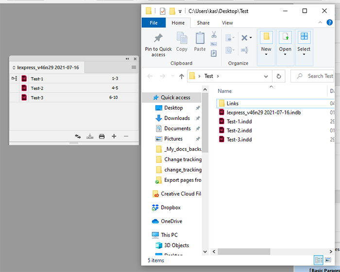
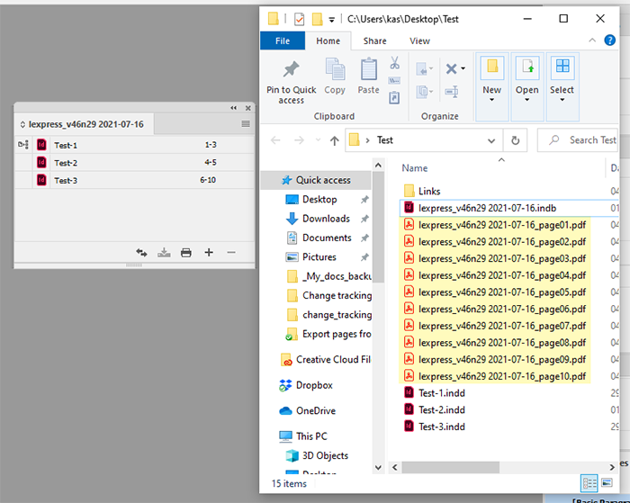

Export pages from the book
Requirements
From an open book, export each page as PDF (Adobe PDF preset: High Quality Print) and save it in the same directory as the book.
Append book name to the beginning of each filename. For example, if book filenames in the book are Page01, Page02, … and book name is lexpress_v46n29 2021-07-16, then:
lexpress_v46n29 2021-07-16_page01
lexpress_v46n29 2021-07-16_page02
…
lexpress_v46n29 2021-07-16_page10
…etc.
Here’s the scenario:
The script turns off ‘view PDF after exporting’ in the ‘export adobe PDF’ dialog box. I think it would be a bad idea to open dozens of PDFs after the script. We may change this: e.g. leave it as it is set in the dialog by the user, or turn it off temporarily.
The script loops through all the documents in the active book and opens them if the document
- is not missing
- is not open by another user on the network
Then it exports each page in the document.
If a page name is one digit a leading zero is added so it’s always two digits; if a section prefix is added and included, the original page name is kept.
Before exporting a doc, all dialog warnings are turned off: to avoid numerous warnings about missing links, fonts, etc., and restores them right after the export, or if an error occurs.
I assume that the user preflights the book before using the script. However, I can log such issues into a text file if you wish.
After export, it closes each document even if it was open before running the script. If you want to leave them open, I’ll have to add more code.
Before

After

Click here to download the script.
Go back to the main Scripts for L'Express de Toronto Inc. page